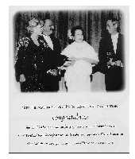

| Reportages spéciaux |
Retranscrit par la soeur initiée Ling Gao, Chicago, Illinois, États-Unis. |
|  | "Maître Suprême Ching Hai, au nom des enfants de la Fondation pour enfants Starlight, qui en compte plus de 500000, nous vous remercions énormément pour votre contribution généreuse." |
Ceux-ci ont été les mots de gratitude que M. Marc Cohen, président de la Fondation, a exprimés au concert bénéfice, "Un monde de paix par la musique" qui a eu lieu à l'auditorium Shrine, le 18 décembre 1998. Lors de cette soirée, Maître Suprême Ching Hai a laissé une impression profonde à une audience de plus de 6000 personnes par Ses poèmes et Sa contribution à 2 organisations pour enfants, la Fondation pour enfants Starlight et l'Hôpital de recherche de St-Jude pour enfants. Plusieurs membres du conseil d'administration de la Fondation pour enfants Starlight ont été subjugués par les talents de Maître à travers Ses peintures, création de bijoux et de vêtements. La directrice générale de la Fondation pour enfants Starlight, Mlle Laurie Goldman, a été très touchée lorsqu'elle a appris la collaboration de Maître à des oeuvres humanitaires, la noblesse de Ses enseignements et Ses différents talents artistiques.
Par la suite, lorsque la Fondation pour enfants Starlight a organisé son Gala de 15e anniversaire, Maître Suprême Ching Hai a reçu une invitation spéciale de Mme Goldman. Même si elle était très occupée à préparer Sa future tournée mondiale de conférences, Maître Ching Hai, touchée par la sincérité de Mme Goldman, s'est réservée du temps pour assister à cet événement.
La Fondation pour enfants Starlight a été créée, il y a 15 ans lorsque l'actrice Emma Sammms et le producteur Peter Samuelson ("Arlington Road," "Tom and Viv," "Wilde") ont répondu au but premier de la Fondation, en donnant de l'argent pour un patient atteint du cancer. Plus tard, la fondation a été créée dans le seul but de rehausser et de toucher les vies des enfants atteints de maladies très graves. Cette organisation à but non lucratif réussit à combler les souhaits les plus chers des enfants, d'accrocher un sourire à leur visage une fois dans leur vie et leur donne à eux et à leur famille d'inoubliables souvenirs.
Le 28 octobre 1999, le Gala du 15e anniversaire, "La magie de Starlight" se tenait à l'Hôtel Regent Beverly Wilshire à Beverly Hills en Californie, États-Unis. L'actrice Kim Basinger, gagnante d'un oscar (L.A. Confidential, The Natural, Batman) et le président de la télévision CBS, Les Moonves, ont co-présidé l'événement.
Maître Suprême Ching Hai est arrivée à l'entrée au tapis rouge de l'Hôtel Regent de Beverly Hills dans une limousine allongée blanche. Elle était éblouissante, vêtue d'une robe verte éclatante avec une fleur blanche dans Ses cheveux. Elle était entourée de plusieurs personnes lorsque les lumières et les caméras ont commencé à s'allumer. Le président de la Fondation, M. Marc Cohen, L'a personnellement reçue et Lui a offert un bouquet de fleurs. Sachant que Son temps était précieux, il a constaté que c'était pour lui et pour la Fondation, un honneur que Maître assiste au Gala.
M. Marc Cohen a amené Maître à l'étage supérieur pour qu'Elle puisse apprécier la réception au Trianon du Regent avant qu'Elle ne s'assoie à la table d'honneur avec sa femme, Kathryn Cohen, qui est membre du conseil d'administration de la Fondation Starlight et lui-même, l'acteur populaire Martin Sheen et sa femme Janet Sheen, le président de la Télévision CBS, M. Les Moonves et l'actrice Swoozie Kurtz, gagnante d'un oscar. Le maître de cérémonie pour la soirée, Swoozie Kurtz, (Citizen Ruth, Liaison Dangereuse, Bright Lights, Big City) a débuté la soirée en remerciant tous les invités qui sont venus pour supporter le noble travail qui est celui de répondre aux besoins des enfants. Elle a ensuite présenté le chanteur et acteur, gagnant d'un oscar, Davis Gaines, qui a chanté une très belle chanson avec sa voix d'opéra. Il a joué plus de 2000 fois le rôle principal de "Andrew Lloyd Webber" dans "Le fantôme de l'Opéra".
Le président de Starlight, Marc Cohen est ensuite monté sur scène pour remercier tous les invités et les nouveaux amis de la Fondation Starlight. Il a aussi écrit dans le programme de la soirée une introduction dans laquelle il remercie spécialement le Maître Suprême Ching Hai à qui il a réservé une page complète dans laquelle on a placé une photo de Maître présentant sa contribution au concert de la Fondation, "Un monde de paix par la musique".
La soirée a débuté par une performance musicale d'une gagnante du Grammy, Shery Crow, qui a enregistré "All I do, Home," et "Strong Enough." Maître était très occupée à accueillir tous les invités qui sont venus à Sa table. Partageant Ses plats végétariens avec eux, ils ont été enchantés du goût exquis de ces mets.
Swoozie Kurtz, gagnante de plusieurs oscars était en admiration devant les gants de Maître. Avec la générosité de Son coeur, Maître les lui a offerts en souvenir et Mme Kurtz les a portés tout en se promenant devant les caméras.
L'acteur Martin Sheen, qui a joué, dirigé et produit plus de 73 films, dont "Apocalypse Now", "Badlands," "Cadence," et "Le American President", et qui a aussi joué dans plusieurs séries à la télévision, comme "The West Wing", dans laquelle il joue le président des États-Unis. Il y avait aussi la vedette d'Hollywood Émilio Estevez, connu dans "Young Guns", "Stakeout," et "Men at Work" et Charlie Sheen, "Platoon" "Navy Seals" et "Hot Shots." Maître Suprême Ching Hai a donné Sa bague "Beauté ancienne" à la femme de M. Sheen, Janet Sheen, qui a remarqué que Maître avait une personnalité ayant beaucoup de magnétisme. (Plus tard, ils ont invité Maître à leur maison et ont manger ensemble.)
Marc et Leslie Cohen ont admiré aussi les bijoux de Maître. Comme symbole d'amitié face à Mme Laurie Goldman, Maître lui a donné la création du Coeur d'Or et Mme Goldman lui a exprimé sa sincère gratitude pour ce précieux cadeau.
Les deux designers, Pericles Rellas et Mitchell Edwards, qui ont créé la nouvelle épinglette pour la Fondation, ont tellement été fascinés par la création de bijoux de Maître "Beautés anciennes", qu'ils se sont approchés de Sa table pour pouvoir les voir de plus près. Ses très belles créations incluent une émeraude et un diamant dans un collier, un bracelet, des boucles d'oreilles et des bagues. Les 2 bijoutiers étaient ravis de Sa création, disant combien Son oeuvre d'art était ingénieuse.
Parmi d'autres invités qui ont eu la chance de rencontrer Maître Suprême Ching Hai, il y avait Julie Warner, vedette à CBS, "Family Law", Bernie Sharf et Kathryn Cohen membres du Conseil d'administration de la Fondation Starlight, Dee Slattery, de Nautica International Inc., et Steve Webster, directeur des relations publiques du réseau des sports Fox.
Avant de quitter le Gala, Maître Suprême Ching Hai a rendu visite aux 3 enfants en phase terminale de la Fondation Starlight avec un de leurs frères qui était sur scène. Toujours avec beaucoup d'amour, Maître leur a offert à chacun un ourson et une enveloppe rouge contenant 1000 $ US d'argent porte-bonheur. C'était une soirée palpitante pour tous les invités qui ont eu la chance de rencontrer Maître Suprême Ching Hai et qui ont été touchés par Sa noblesse de coeur et par Sa générosité sans bornes.
Note : La lettre présente une photo encadrée de Maître Ching Hai avec Martin Sheen et Swoozie Kurtz
Le 22 novembre 1999
Chère Maître Suprême Ching Hai,
Veuillez S'il Vous plaît, accepter ce petit cadeau en guise de notre appréciation pour tous les sourires que Vous avez apportés sur les visages des enfants particuliers de Starlight. Grâce à Votre générosité, cette année Starlight fera son 20 000ème souhait, placera son 2 000 ème centre d'amusements et touchera la vie des enfants atteints de maladies graves ainsi que leur famille plus de 660 000 fois.
Votre présence à notre récent Gala "La magie de Starlight" a été sincèrement tout un honneur pour nous. Je sais que Vous avez un horaire excessivement chargé et le fait que Vous ayez pu réserver du temps aux enfants ne me prouve que Votre bonté irrésistible, Votre compétence expansive et la vaste nature de Votre esprit de vouloir prendre soin des autres. Sur une note personnelle, cela a été un grand plaisir que de Vous revoir. Nous étions tous déçus que le président ait dû tout annuler à la dernière minute, mais Votre présence a grandement diminué l'impact de la déception.
J'ai entendu dire que Vous étiez en train de faire une tournée mondiale de conférences. Je Vous souhaite la meilleure des chances et j'espère de tout coeur que lorsque Vous reviendrez à Los Angeles, Vous me ferez l'honneur de parler avec Vous, plus en profondeur, des merveilleux programmes que Starlight offre pour aider à embellir les vies des enfants malades. De plus, si Votre emploi du temps Vous le permet, cela serait un plaisir de Vous faire visiter une de nos chambres Starlight.
Une fois de plus, au nom de tout le personnel de Starlight et de tous les enfants qui bénéficient de Votre bienveillance, je Vous remercie.
Recevez notre chaleureuse amitié et notre respect sincère.
John Moschitta, Jr.
Vice-président général
Directeur général